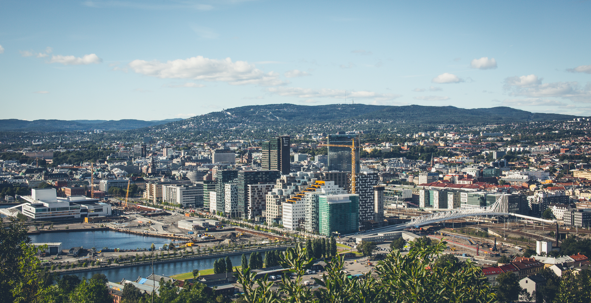
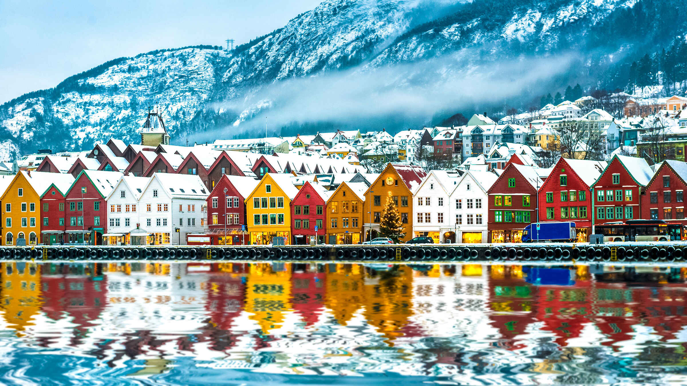
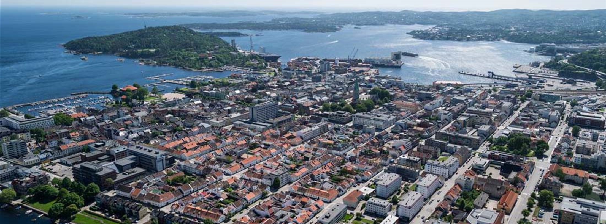

 Oslon väkiluku on 697 028 ja kokonaispinta-ala on 454 km². Oslo on Norjan pääkaupunki ja suurin kaupunki Norjassa. Oslo sijaitsee Etelä-Norjassa Oslonvuonon pohjoispäässä. Oslon keskusta sijaitsee lähellä rantaa, kahden sataman välissä. Tässä on kuva Oslon kaupungista
2. Bergen
 Bergenin väkiluku on 279 792 ja kokonaispinta-ala on 465,4 km². Bergen on kaupunki Vestlandin läänissä Norjassa. Se sijaitsee Norjan länsirannikolla. Vuoden 2018 alussa Bergenissä oli lähes 280 000 asukasta, joten se oli asukasluvultaan Norjan toiseksi suurin kunta ja Pohjoismaiden kahdeksanneksi suurin kaupunki. Bergenin vanhin rakennus on 1100-luvulla rakennettu Mariankirkko. Bergenin talouden perustana ovat kalastus ja laivanrakennus ja niihin liittyvät teollisuudenalat. Tässä on kuva Bergenin kaupungista
3. Trondheim
Trondheimin väkiluku on 198 219 ja kokonaispinta-ala on 342,3 km². Trondheim on kaupunki Norjan länsirannikolla Etelä-Trøndelagin läänissä. Trondheim on yksi Norjan tärkeimmistä koulu- ja opiskelijakaupungeista. Trondheim on Norjan johtava kaupunki merentutkimuksen, tekniikan ja lääketiedeteknologian tutkimuksessa. Trondheim sijaitsee Nidelva-joen ja Trondheiminvuonon suistossa, minkä ansiosta sinne on aina ollut suhteellisen helppo matkustaa laivoilla ja sen asema kauppasatamana on ollut merkittävä. Tässä on kuva Trondheimin kaupungista
4. Stavanger
Stavangerin väkiluku on 133 140 ja kokonaispinta-ala on 71,4 km². Stavanger sijaitsee niemimaalla, jonka länsipuolta huuhtoo Norjanmeri, idässä on Gandsin vuono. Kaupungissa on elintarvike-, laivanrakennus-, metalli-, kumi-, tekstiili- ja graafista teollisuutta. Stavangerin satama kuuluu Norjan tärkeimpiin ja kaupungin rautatieasema on Sørlandin radan päätepiste. Tässä on kuva Stavangerin kaupungista
5. Kristiansand
 Kristiansandin väkiluku on 85 983 ja kokonaispinta-ala on 276,4 km². Kristiansand on Länsi-Agderin läänin pääkaupunki Norjassa. Kristiansandin perusti Tanska-Norjan kuningas Kristian IV vuonna 1641 ja rakennutti samalla kaupungin suojaksi Christiansholmin linnakkeen. Kaupungissa on öljynporauslaitteiden ja -teknologian klusteri, joka on saavuttanut mainetta maailmalla. Kristiansand on Agderin yliopiston pääpaikka. Tässä on kuva Kristiansand kaupungista